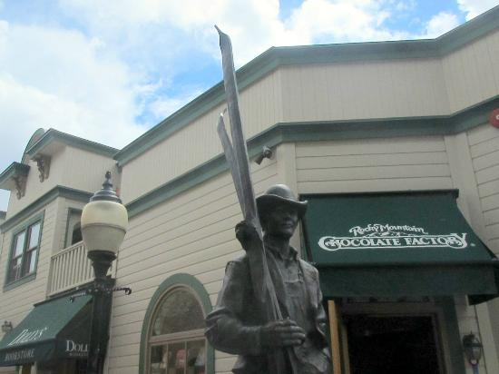

Dining in Park City will be a Treat!
Park City has so much to offer for the food industry, that many places won't even make it on this list. With that said, here is our list of go-to restarants:
- Wasatch Brewery: This is one of our favorite spots to hit, every vacation! Over 50 beers on tap (some are brewed in house), Huge Bison Burgers, and high energy atmospehere!
- The Eating Establishment: When I want a good mix drink and a nice rack of ribs, I go here every time! This establishment has a relaxing atmosphere with a home like vibe.
- Baja Cantina: This mexican restaurant is the perfect way to spicen up a family vacation or get a little tipsy with there great mixed drinks!
Come and get some Sweets!
We have some excellent dessert places all around Park City. We suggest taking a walk downtown to see all that it has to offer:
- Rocky Mountain Chocolate Factory: This style bakery is more of an adventure than anything else. So many desserts, made in house, to choose from!From cookies to ice cream and anything in between.
- 501 on Main: Housemade desserts are the specialty here. Only found here in downtown Park City!
- Fletcher's: The best buttercake in all of Utah! Come enjoy the family friendly atmosphere!
